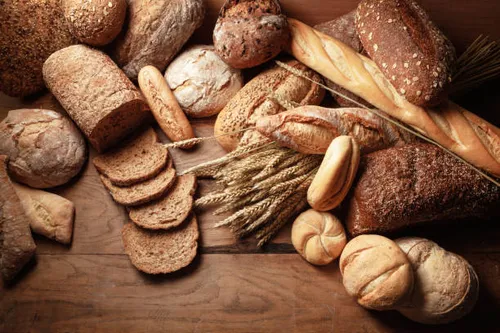
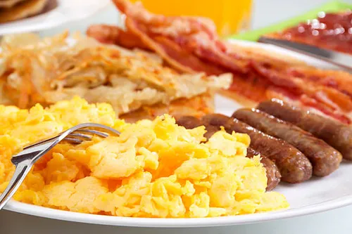
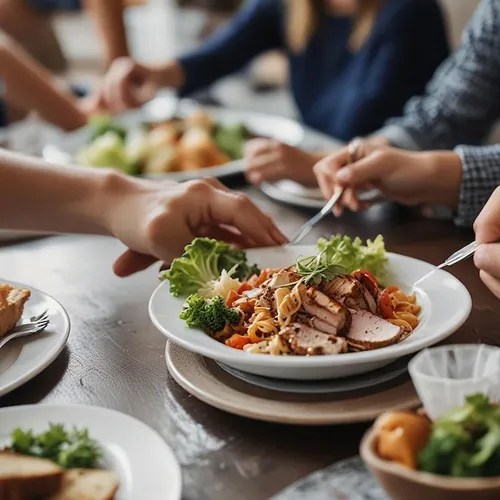
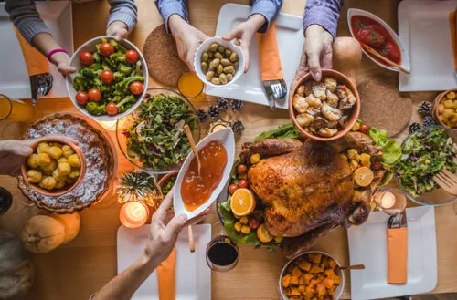
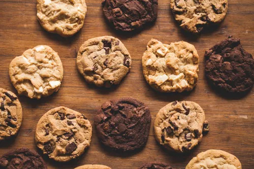

Food
Momma's Recipes has many great recipes for bread, deserts, dinners and more!





Momma's Recipes has many great recipes for bread, deserts, dinners and more!
Try Momma's Sweet Bread, Banana Bread and The Best Pancakes.